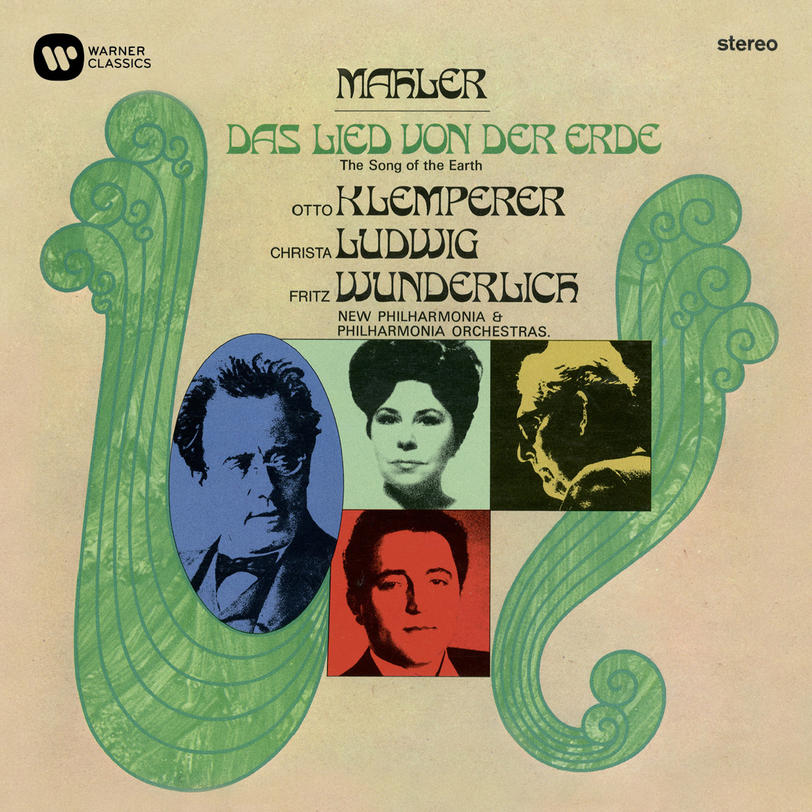
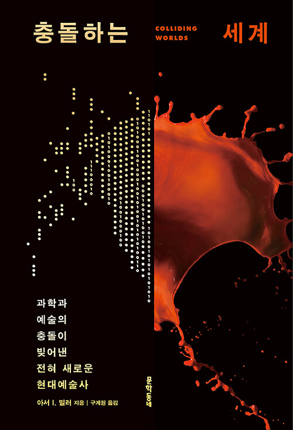
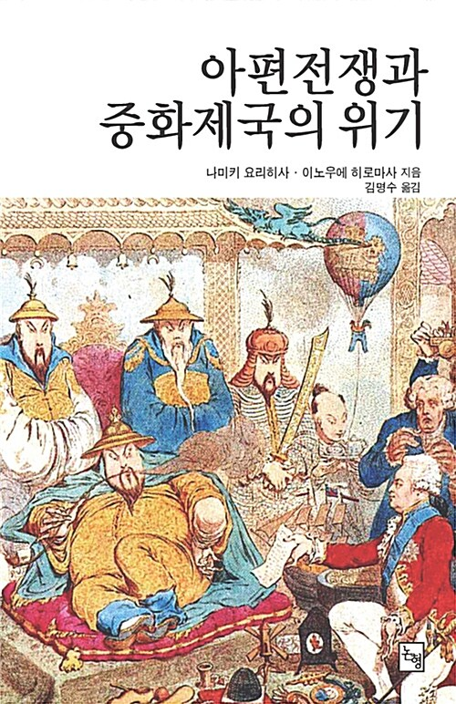
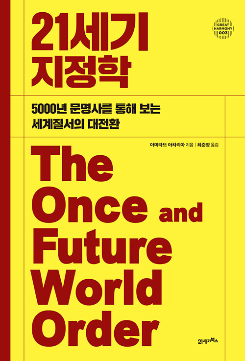
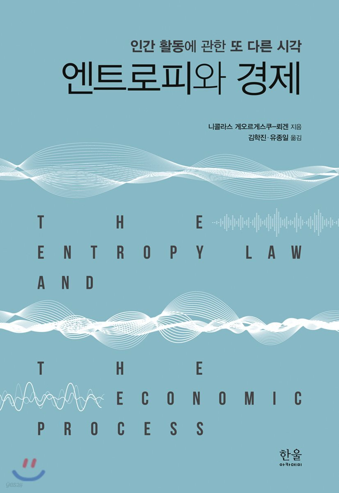
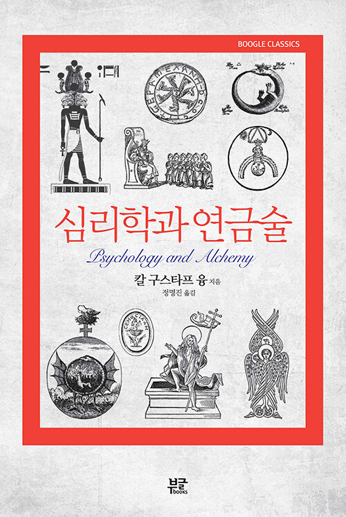
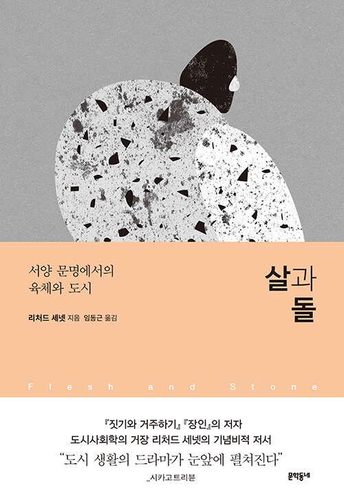
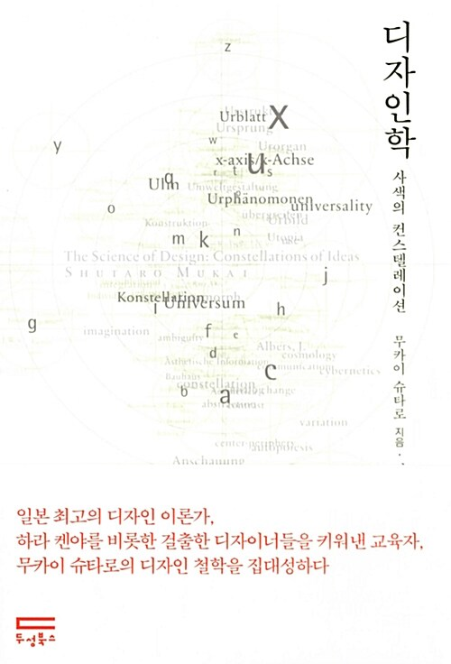
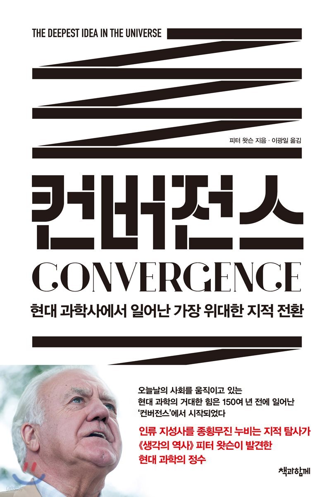

Issue 63 · Daily webzine
PaulArchiveNotes
Issue 63은 폴 고갱의 《우리는 어디서 왔는가? 우리는 무엇인가? 우리는 어디로 가는가?》에서 시작합니다. 생의 알레고리와 식민지 타히티가 한 화면에 겹칠 때, 보편을 말하는 ‘우리’ 안에 누가 들어가고 누가 풍경으로 밀려나는지 묻습니다. 과학과 예술의 충돌, 아편전쟁 이후의 중국, 서구 너머의 세계질서와 클렘페러의 말러 《대지의 노래》를 곁에 놓고 서로 다른 세계가 만나고 번역되는 순간을 읽고 듣습니다.
63
세상의 기원은 누구의 낯선 땅 위에 그려지는가
고갱의 긴 화면에서 생의 기원과 끝을 묻는 형상은 식민지 타히티와 유럽 화가의 욕망을 함께 드러냅니다. 세 권의 책은 과학과 예술, 청과 서구, 여러 문명이 부딪혀 새로운 질서를 만드는 과정을 읽고, 클렘페러의 음반은 여러 언어를 건너온 중국 시가 말러의 이별 노래가 되는 순간을 들려줍니다.
세상의 기원은 누구의 낯선 땅 위에 그려지는가
2026.09.04 Issue 63 · 생의 알레고리와 식민지 타히티, 빌려 온 형상이 한 화면에 남긴 아름다움과 불균형을 읽습니다.

번역된 먼 나라의 시는 어떻게 이별의 음악이 되는가
중국 시가 여러 언어를 건너 말러에게 닿은 길과 클렘페러의 육중하고 투명한 이별을 듣습니다.

과학의 도구는 언제 예술의 감각이 되는가
이미지와 기술, 생명과 데이터가 과학과 예술 사이에 새로운 작업의 규칙을 만드는 과정을 읽습니다.

한 제국의 패배는 어떻게 새로운 세계질서가 되는가
조공체제와 조약체제의 충돌에서 태평천국과 상하이, 청말 개혁으로 이어지는 제국의 변화를 읽습니다.

질서는 누구의 기억을 지우고 세계가 되었는가
서구 한 중심에서 벗어나 여러 문명이 함께 만든 세계질서의 기억과 멀티플렉스 세계를 읽습니다.
이슈 읽기 Issue 01-63 전체 전면
Issue 63 오늘 더 읽고 듣기
Issue 62 오늘 더 읽고 듣기
Issue 61 오늘 더 읽고 듣기
Issue 60 오늘 더 읽고 듣기
Issue 59 오늘 더 읽고 듣기
Issue 58 오늘 더 읽고 듣기
Issue 57 오늘 더 읽고 듣기
Issue 56 오늘 더 읽고 듣기
Issue 55 오늘 더 읽고 듣기
Issue 54 오늘 더 읽고 듣기
Issue 53 오늘 더 읽고 듣기
Issue 52 오늘 더 읽고 듣기
Issue 51 오늘 더 읽고 듣기
Issue 50 오늘 더 읽고 듣기
Issue 49 오늘 더 읽고 듣기
Issue 48 오늘 더 읽고 듣기
Issue 47 오늘 더 읽고 듣기
Issue 46 오늘 더 읽고 듣기
Issue 45 오늘 더 읽고 듣기
Issue 44 오늘 더 읽고 듣기
Issue 43 오늘 더 읽고 듣기
Issue 42 오늘 더 읽고 듣기
Issue 41 오늘 더 읽고 듣기
Issue 40 오늘 더 읽고 듣기
Issue 39 오늘 더 읽고 듣기
Issue 38 함께 읽고 듣기
Issue 37 함께 읽고 듣기
Issue 36 읽고 듣기
Issue 35 함께 읽고 듣기
Issue 33 부속 책과 음반
Main Image
오늘의 그림
Books
오늘의 책장
과학의 도구는 언제 예술의 감각이 되는가
시각화와 미디어아트, 생명과 건축, 소리와 데이터를 오가며 과학과 예술이 서로의 방법을 바꾸는 과정을 읽습니다.
한 제국의 패배는 어떻게 새로운 세계질서가 되는가
두 차례 전쟁과 태평천국, 상하이와 양무운동, 변경의 위기에서 청말 개혁까지 제국이 다시 짜인 시간을 읽습니다.
질서는 누구의 기억을 지우고 세계가 되었는가
수메르와 이집트에서 반둥과 미국 주도 질서까지 여러 문명이 만든 세계질서와 서구 이후의 가능성을 읽습니다.
Bernstein Record Room
오늘의 음반장
Today’s Contribution
오늘의 기고
전쟁은 어떻게 승리 없는 연장이 되는가
제한전과 수색·섬멸, 사살자 수 지표와 테트 공세를 따라 전술적 우세가 정치적 패배를 연장한 구조와 미국 중심 군사사의 한계를 읽습니다.

경제는 왜 완전한 원이 될 수 없는가
엔트로피 법칙과 흐름-기금 모형, 생명경제학을 따라 생산의 비가역성과 순환경제, 성장의 한계 및 물질 엔트로피 논쟁을 읽습니다.

마음의 어두운 작업실
꿈의 연속성과 만다라, 개성화와 연금술의 물질 이미지를 따라가며 융의 상징 해석이 지닌 통찰과 역사적 한계를 함께 읽습니다.

살과 돌: 도시는 몸을 어떻게 기억하게 하는가
아테네의 광장과 베네치아의 게토, 근대의 대로와 오늘의 서울을 지나며 도시가 몸의 움직임과 접촉, 시민의 감각을 조직하는 방식을 읽습니다.

형태 이전의 디자인
컨스텔레이션과 생활세계의 관점으로 디자인을 외관이 아니라 사람과 사물, 제도와 환경 사이의 관계를 만드는 지성으로 읽습니다.

지식은 왜 다시 하나의 세계를 말하는가
에너지 보존과 진화론에서 분자생물학과 빅 히스토리까지, 피터 왓슨의 통합 과학사를 환원주의의 위험과 함께 읽습니다.
Board Archive
매일 쌓이는 공개 노트
공개 웹진은 Issue 63까지의 이슈를 보존합니다. 고갱의 《우리는 어디서 왔는가? 우리는 무엇인가? 우리는 어디로 가는가?》를 중심에 두고 클렘페러의 말러 《대지의 노래》, 《충돌하는 세계》, 《아편전쟁과 중화제국의 위기》, 《21세기 지정학》을 독립된 비평으로 엮었습니다. ‘이슈 읽기’에서는 Issue 01부터 63까지의 대표 글을 모두 다시 열 수 있습니다. 각 호의 책과 음반은 이슈 글 끝의 참고 링크에서 이어집니다.
전체 글 보기Daily Notes
공개 글을 매일의 아카이브로 쌓습니다
이슈 에세이와 오늘의 책장, 음반, 그림 글은 모두가 읽을 수 있는 공개 노트로 둡니다. 시간이 지나면 개인 서재와 레코드룸, 이미지 노트가 함께 축적되는 읽을 수 있는 목록이 됩니다.
오늘의 이슈 보기